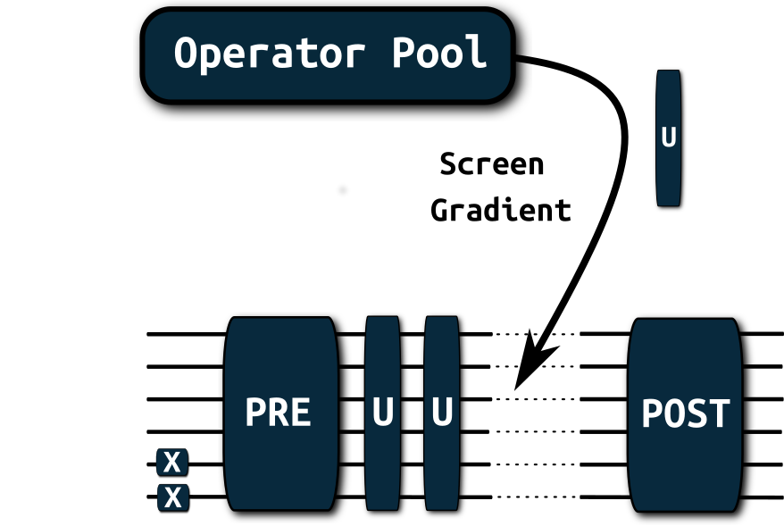
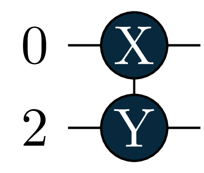
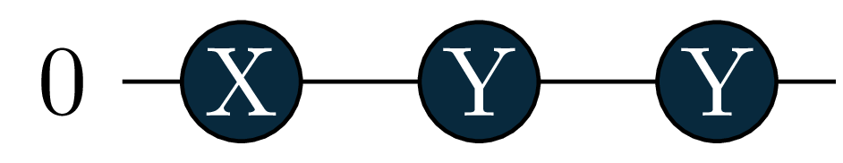
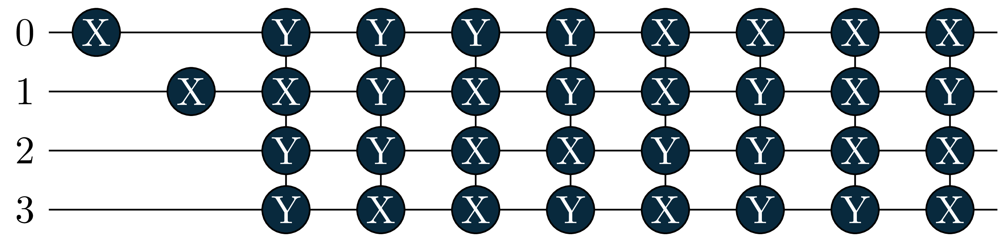
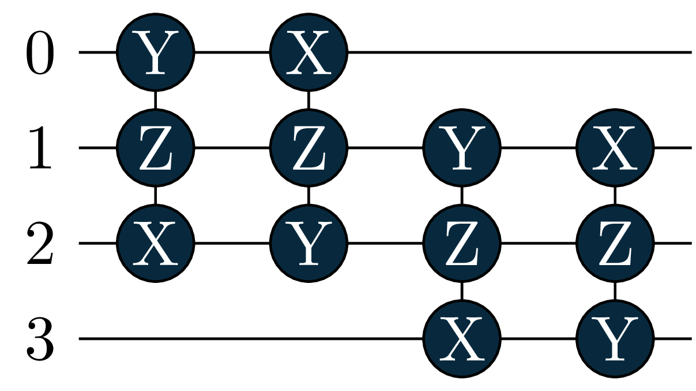
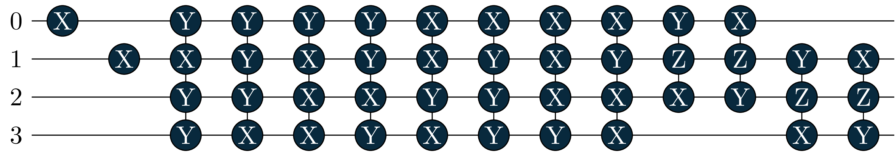

import tequila as tq
import numpy
from IPython.display import Image
# small helper functions to display nicer circuits
def show(circuit, name=None, *args, **kwargs):
tq.circuit.export_to(circuit, "{}.png".format(name), *args, **kwargs)
return Image("{}.png".format(name), *args, **kwargs)
# this is how it works
circuit = tq.gates.ExpPauli(paulistring="X(0)Y(2)", angle=1.0)Adaptive Solver
code
Adaptive Solver
This is a short demonstration of the generalized adaptive solver from:
J.S. Kottmann, A. Anand, A. Aspuru-Guzik, “A feasible approach for automatically differentiable unitary coupled-cluster on quantum computers”.
See: doi.org/10.1039/D0SC06627C for more details.

This tutorial contains the usage for the generalized adaptive solver, it does not discuss the underlying machinery for the fermionic gradients (they are automatically constructed in the background and are used for screening and optimization. See the printouts of the optimizers for information about the expectation values in the objectives and gradients).
Fore more information about adaptive solvers, we also recommend to look at the original works on adaptive solvers by Grimsley and Ryabinkin:
In order to execute this tutorial properly you need to: - checkout the devel branch of tequila (the adapt solver is not yet part of the main branch):
pip install git+https://github.com/aspuru-guzik-group/tequila/tree/devel.git - have qpic installed to display the circuits: pip install qpic
General introduction to tequila and it’s chemistry modules can be found in separate tutorials: - Basic usace of tequila: BasicUsage - Basics with tequila, psi4 and our automatically differentiable framework: Chemistry.ipynb - Another example for an excited state solver (same principle, less abstraction): ChemistryExcitedState.ipynb - Basics of our basis-set-free madness interface, that can be used with the adaptive solvers here as well: ChemistryMadnessInterface.ipynb

Note that circuits will be represented by their generator in primitive Pauli Rotations so the picture above represents \[e^{-i\frac{\theta}{2} \sigma_x(0) \sigma_y(2)} \equiv e^{-i\frac{\theta}{2} X(0) Y(2)}\]
Code
# failsafe
try:
test = tq.adapt
except:
print("It seems you have the wrong version of tequila checked out. Please check out the `devel` branch. Or re-install with\npip install git+https://github.com/aspuru-guzik-group/tequila/tree/devel.git")A one-qubit example
We start with a simple one-qubit example.
Of course one would not need an adaptive solver for this, but it executes fast!
Our circuit will be constructed as in the picture above with: \[ U_{\text{Pre}} = X \] \[ U_{\text{Post}} = Y \]
For the adaptive part, we construct an operator pool consisting of the operations: \[ \text{operator\_pool} = \left\{ e^{-i\frac{\theta}{2} X}, e^{-i\frac{\theta}{2} Y}, e^{-i\frac{\theta}{2} Z} \right\} \] In the code block, the operator_pool is initialized over it’s generators (here: \(X,Y,Z\)).
The target will be to minimize the expectation value over \(X\): \[ \min_{\boldsymbol{\theta}} \langle X \rangle_{U_{\text{Post}}U_{\text{Adapt}(\boldsymbol{\theta})}U_{\text{Pre}}}\]
After the adapt solver is initialized, it can be called. The usual keywords for quantum backend and optimizer can be passed at construction of the solver via compiler_args={backend="qiskit", samples=1000} and optimizer_args={method="bfgs"}. Note that they are repeated when the solver starts and that the other parameters can be changed as well by just passing name at initialization as key=value.
H = tq.paulis.X(0)
Upre = tq.gates.X(0)
Upost = tq.gates.Y(0)
generators = [tq.paulis.Y(0), tq.paulis.Z(0), tq.paulis.X(0)]
operator_pool = tq.adapt.AdaptPoolBase(generators=generators)
solver = tq.adapt.Adapt(H=H, operator_pool=operator_pool, Upre=Upre, UPost=Upost)
result = solver()Starting Adaptive Solver
optimizer_args : {'method': 'bfgs', 'silent': True, 'method_options': {'gtol': 1e-05}}
compile_args : {}
maxiter : 100
energy_convergence : None
gradient_convergence : 0.001
max_gradient_convergence : 0.0005
degeneracy_threshold : 0.0005
silent : False
operator pool: : AdaptPoolBase with 3 Generators
objective factory : : ObjectiveFactoryBase
-------------------------------------
Finished iteration 0
added [[('0', (0, 0))]]
current energy : -1.00000000
difference : +1.00000000
grad_norm : +1.00000000
max_grad : +1.00000000
ops in circuis : 1
optimizer : bfgs
opt-iterations : 4
pool gradient norm is +0.00000000, convergence criterion metHere is the final circuit. The result is not very surprising.
Note that the adaptive solver gives you back the circuit part that was adaptively constructed.
So in order to get the full circuit with Pre and Post part, you need to assemble it yourself.
This makes it easier for cases, where Pre and Post are only used for the optimization.
final_circuit = Upre + result.U + Upost
#show(final_circuit, width=200)
A Molecular Ground State
In the following, we employ the adaptive solver for a Molecular ground state, and we use an operator pool with electronic excitation (unitary-coupled cluster primitives). As a toy model we use a simple helium atom since that executes fast in a notebook.
In principle, we could use the standard operator_pool from before, and change the generators accordingly (mol.make_excitation_generator).
Is is however better to initialize those gates directly (mol.make_excitation_gate), so that tequila can exploit the fermionic information and the optimized gradient framework from doi.org/10.1039/D0SC06627C can be applied.
In the MolecularPool this is automatized. The pool can be constructed by handing spin-orbital indices that describe electronic excitations. One example would be operator_pool = [((0,2),(1,3)), ((0,2)), ((1,3))] that holds one double excitation (electrons from spin orbitals 0 and 1 are excited to 2 and 3, and vice versa) and two single excitations. For convenience UpCCGSD style pools can be constructed (UpCCD, UpCCSD, UpCCGD, UpCCGSD) by a string keyword.
mol = tq.Molecule(geometry="He 0.0 0.0 0.0", basis_set="6-31G")
operator_pool = tq.adapt.MolecularPool(molecule=mol, indices="UpCCSD")
solver = tq.adapt.Adapt(H=mol.make_hamiltonian(), Upre=mol.prepare_reference(), operator_pool=operator_pool)
result = solver(operator_pool=operator_pool, label=0)
final_circuit = mol.prepare_reference() + result.UStarting Adaptive Solver
optimizer_args : {'method': 'bfgs', 'silent': True, 'method_options': {'gtol': 1e-05}}
compile_args : {}
maxiter : 100
energy_convergence : None
gradient_convergence : 0.001
max_gradient_convergence : 0.0005
degeneracy_threshold : 0.0005
silent : False
operator pool: : MolecularPool with 3 Generators
objective factory : : ObjectiveFactoryBase
-------------------------------------
Finished iteration 0
added [[(((0, 2), (1, 3)), (0, 0))]]
current energy : -2.87014549
difference : +0.01498506
grad_norm : +0.22767050
max_grad : +0.22767050
ops in circuis : 1
optimizer : bfgs
opt-iterations : 4
detected degeneracies: increasing batch size temporarily from 1 to 2
-------------------------------------
Finished iteration 1
added [[(((0, 2),), (1, 0))], [(((1, 3),), (1, 0))]]
current energy : -2.87016214
difference : +0.00001665
grad_norm : +0.00601940
max_grad : +0.00425636
ops in circuis : 3
optimizer : bfgs
opt-iterations : 4
pool gradient norm is +0.00000230, convergence criterion met
The Same Ground State with fixed Post circuit
The adaptive run before, did not include single excitations (gradients are below the default thresholds for this ground state). Here we add them fixed as Post circuit as an example. You will observe that the energy does not really change through them in this case.
mol = tq.Molecule(geometry="He 0.0 0.0 0.0", basis_set="6-31G")
Upost = mol.make_excitation_gate(angle="a", indices=[(0,2)])
Upost += mol.make_excitation_gate(angle="a", indices=[(1,3)])
This Post circuit that we added are single electron excitations that are not all-too important to the Helium ground state, so that the adaptive solver did not include them before. As a Pre circuit we will use the Hartree-Fock reference as before.
Note, that we will optimize the parameters “a”.
You can keep them static by passing for example static_variables={"a":1.0}.
The default starting value is 0.0, you can change that by passing variables={"a":1.0}.
Here, we pass both with None (which is the default) to illustrate where they go.
operator_pool = tq.adapt.MolecularPool(molecule=mol, indices="UpCCSD")
solver = tq.adapt.Adapt(H=mol.make_hamiltonian(),
Upre=mol.prepare_reference(),
Upost=Upost,
operator_pool=operator_pool,
optimizer_args={"method":"bfgs", "silent":True})
result = solver(operator_pool=operator_pool, label=0, static_variables=None, variables=None)
final_circuit = mol.prepare_reference() + result.U + UpostStarting Adaptive Solver
optimizer_args : {'method': 'bfgs', 'silent': True}
compile_args : {}
maxiter : 100
energy_convergence : None
gradient_convergence : 0.001
max_gradient_convergence : 0.0005
degeneracy_threshold : 0.0005
silent : False
operator pool: : MolecularPool with 3 Generators
objective factory : : ObjectiveFactoryBase
initial optimization
-------------------------------------
Finished iteration 0
added [[(((0, 2), (1, 3)), (0, 0))]]
current energy : -2.87016209
difference : +0.01500166
grad_norm : +0.22767050
max_grad : +0.22767050
ops in circuis : 1
optimizer : bfgs
opt-iterations : 5
pool gradient norm is +0.00041032, convergence criterion met /opt/anaconda3/envs/BlogQA/lib/python3.9/site-packages/tequila/apps/adapt/adapt.py:161: TequilaWarning:variable a of initial objective not given, setting to 0.0 and activate optimization
Molecular Ground and Excited States
Finally, we compute the first 3 2-electron eigenstates of the molecule.
We will stay in the 2-electron sector, since our UCC excitations can not break particle symmetry and we are starting with a 2-electron wavefunction (the Hartree-Fock reference). You can try to change the starting state by replacing UPre with any circuit you like.
In order to compute excited states, we need to minimize a different objective: \[ O = \langle H \rangle_{U(\theta)} + c \sum_i \langle \mathbf{Q}_+ \rangle_{U_i^{\dagger}U(\theta)}, \quad \mathbf{Q}_+ = \lvert 0\dots0 \rangle \langle 0\dots0 \rvert \] where \(U(\theta)\) is the adaptive circuit and \(U_i\) are all the circuits of the states found before. We chose a large number for \(c\) instead of the energies of the corresponding state, since the third state will not be bounded (positive energy).
See doi.org/10.1039/D0SC06627C and its appendix for a more detailed derivation of the objective.
Here the objective is constructed automatically in the ObjectiveFactorySequentialExcitedState object.
If you want to create your own objective factory: Just look at the source code of that object. In principle, you can pass any object as objective_factory that produces a tequila objective when given a tequila circuit. This is also how it is used within the adapt solver.
mol = tq.Molecule(geometry="He 0.0 0.0 0.0", basis_set="6-31G")
operator_pool = tq.adapt.MolecularPool(molecule=mol, indices="UpCCSD")
circuits = []
variables = {}
for state in range(3):
print("\nStarting optimization of state {}".format(state))
Upre = mol.prepare_reference()
operator_pool = tq.adapt.MolecularPool(molecule=mol, indices="UpCCSD")
objective_factory = tq.adapt.ObjectiveFactorySequentialExcitedState(Upre=mol.prepare_reference(), H=mol.make_hamiltonian(), circuits=circuits, factors=[100.0]*len(circuits))
solver = tq.adapt.Adapt(objective_factory=objective_factory,
Upre=mol.prepare_reference(),
operator_pool=operator_pool,
optimizer_args={"method":"bfgs", "silent":True})
result = solver(operator_pool=operator_pool, label=state, static_variables=variables)
U = Upre + result.U
circuits.append(U)
variables = {**variables, **result.variables}
Starting optimization of state 0
Starting Adaptive Solver
optimizer_args : {'method': 'bfgs', 'silent': True}
compile_args : {}
maxiter : 100
energy_convergence : None
gradient_convergence : 0.001
max_gradient_convergence : 0.0005
degeneracy_threshold : 0.0005
silent : False
operator pool: : MolecularPool with 3 Generators
objective factory : : ObjectiveFactorySequentialExcitedState
-------------------------------------
Finished iteration 0
added [[(((0, 2), (1, 3)), (0, 0))]]
current energy : -2.87014549
difference : +0.01498506
grad_norm : +0.22767050
max_grad : +0.22767050
ops in circuis : 1
optimizer : bfgs
opt-iterations : 3
detected degeneracies: increasing batch size temporarily from 1 to 2
-------------------------------------
Finished iteration 1
added [[(((0, 2),), (1, 0))], [(((1, 3),), (1, 0))]]
current energy : -2.87016199
difference : +0.00001650
grad_norm : +0.00601850
max_grad : +0.00425564
ops in circuis : 3
optimizer : bfgs
opt-iterations : 1
pool gradient norm is +0.00059847, convergence criterion met
Starting optimization of state 1
Starting Adaptive Solver
optimizer_args : {'method': 'bfgs', 'silent': True}
compile_args : {}
maxiter : 100
energy_convergence : None
gradient_convergence : 0.001
max_gradient_convergence : 0.0005
degeneracy_threshold : 0.0005
silent : False
operator pool: : MolecularPool with 3 Generators
objective factory : : ObjectiveFactorySequentialExcitedState
-------------------------------------
Finished iteration 0
added [[(((0, 2), (1, 3)), (0, 1))]]
current energy : +0.60387428
difference : +96.54096529
grad_norm : +6.33415853
max_grad : +6.32610348
ops in circuis : 1
optimizer : bfgs
opt-iterations : 3
detected degeneracies: increasing batch size temporarily from 1 to 2
-------------------------------------
Finished iteration 1
added [[(((0, 2),), (1, 1))], [(((1, 3),), (1, 1))]]
current energy : -0.94871301
difference : +1.55258729
grad_norm : +0.08015813
max_grad : +0.05668035
ops in circuis : 3
optimizer : bfgs
opt-iterations : 14
pool gradient norm is +0.00017176, convergence criterion met
Starting optimization of state 2
Starting Adaptive Solver
optimizer_args : {'method': 'bfgs', 'silent': True}
compile_args : {}
maxiter : 100
energy_convergence : None
gradient_convergence : 0.001
max_gradient_convergence : 0.0005
degeneracy_threshold : 0.0005
silent : False
operator pool: : MolecularPool with 3 Generators
objective factory : : ObjectiveFactorySequentialExcitedState
-------------------------------------
Finished iteration 0
added [[(((0, 2), (1, 3)), (0, 2))]]
current energy : +0.90931334
difference : +196.23552624
grad_norm : +6.29902570
max_grad : +6.28861085
ops in circuis : 1
optimizer : bfgs
opt-iterations : 3
detected degeneracies: increasing batch size temporarily from 1 to 2
-------------------------------------
Finished iteration 1
added [[(((0, 2),), (1, 2))], [(((1, 3),), (1, 2))]]
current energy : +0.60863698
difference : +0.30067635
grad_norm : +5.06475830
max_grad : +3.58132494
ops in circuis : 3
optimizer : bfgs
opt-iterations : 4
pool gradient norm is +0.00032132, convergence criterion metLet’s take a look at the states we found:
H = mol.make_hamiltonian()
for U in circuits:
energy = tq.simulate(tq.ExpectationValue(H=H, U=U), variables=variables)
wfn = tq.simulate(U, variables=variables)
print("energy = {:+2.4f}, wfn=".format(energy), wfn)energy = -2.8702, wfn= +0.9978|1100> -0.0023|0110> +0.0023|1001> -0.0657|0011>
energy = -0.9487, wfn= +0.0068|1100> +0.7060|0110> -0.7060|1001> +0.0549|0011>
energy = +0.6086, wfn= +0.0654|1100> -0.0391|0110> +0.0391|1001> +0.9963|0011> Lets diagonalize the Hamiltonian with numpy and check if we really found eigenstates We will only display states that have overlap with our reference wavefunction (\(\lvert 110000....0\rangle = \lvert 2^{N_q -1} + 2^{N_q -2} \rangle\))
in order to not have too much output here
eigenvalues, eigenvectors = numpy.linalg.eigh(H.to_matrix())
n_qubits = H.n_qubits
reference_basis_state = 2**(n_qubits-1) + 2**(n_qubits-2)
print("total states: {}".format(len(eigenvalues)))
print("states of interest:")
for i in range(len(eigenvalues)):
if not numpy.isclose(eigenvectors[:,i][reference_basis_state], 0.0, atol=1.e-4):
print("energy = {:2.4f}, wfn = ".format(eigenvalues[i]), tq.QubitWaveFunction(eigenvectors[:,i]))total states: 16
states of interest:
energy = -2.8702, wfn = +0.0657|0011> +0.0021|0110> -0.0021|1001> -0.9978|1100>
energy = -0.9487, wfn = -0.0550|0011> -0.7060|0110> +0.7060|1001> -0.0066|1100>
energy = 0.6086, wfn = -0.9963|0011> +0.0391|0110> -0.0391|1001> -0.0655|1100> Let’s also look at the circuits: The singles became more important in the excited states, and where added by the adaptive solver!
circuit[0]
circuit[1] 
circuit[2]
Acceleration with multiprocessing
You can speed up the screening procedure with multiprocessing (not however, that depending on which backend it is, the quantum backend will also use multiprocessing – so it is advised to balance the multiprocessing worker threads with OMP_NUM_THREADS). Here is the last example with multiprocessing and 2 threads. Note that you need to create a Psi4 independent molecule object in order to make it suitable for multiprocessing.
We advise not to execute the cell in a jupyter notebook!
if False: # let's not execute this here
import tequila as tq
import multiprocessing as mp
mp_pool = mp.Pool(2)
mol = tq.Molecule(geometry="He 0.0 0.0 0.0", basis_set="6-31G")
# decouple from psi4 (psi4 molecules can not be pickled)
mol = tq.chemistry.MoleculeFromOpenFermion(mol.molecule)
operator_pool = tq.adapt.MolecularPool(molecule=mol, indices="UpCCSD")
circuits = []
variables = {}
for state in range(3):
print("\nStarting optimization of state {}".format(state))
Upre = mol.prepare_reference()
operator_pool = tq.adapt.MolecularPool(molecule=mol, indices="UpCCSD")
objective_factory = tq.adapt.ObjectiveFactorySequentialExcitedState(Upre=mol.prepare_reference(), H=mol.make_hamiltonian(), circuits=circuits, factors=[100.0]*len(circuits))
solver = tq.adapt.Adapt(objective_factory=objective_factory,
Upre=mol.prepare_reference(),
operator_pool=operator_pool,
optimizer_args={"method":"bfgs", "silent":True})
result = solver(operator_pool=operator_pool, label=state, static_variables=variables, mp_pool=mp_pool)
U = Upre + result.U
circuits.append(U)
variables = {**variables, **result.variables}
mp_pool.close()
mp_pool.join()